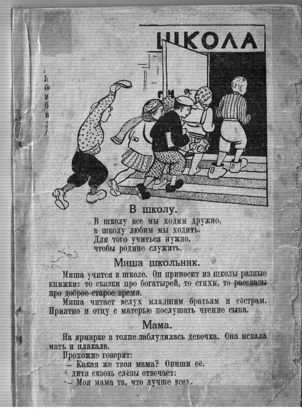
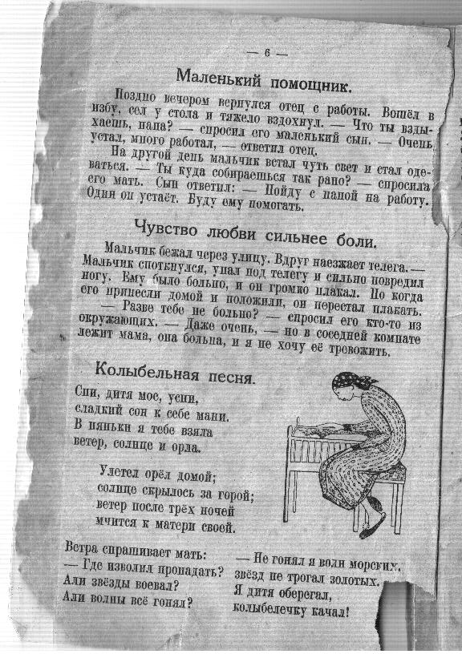
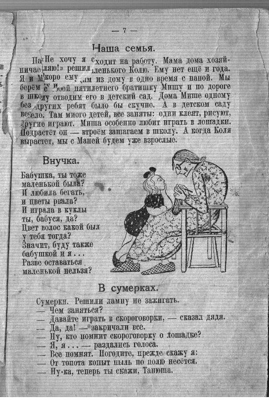
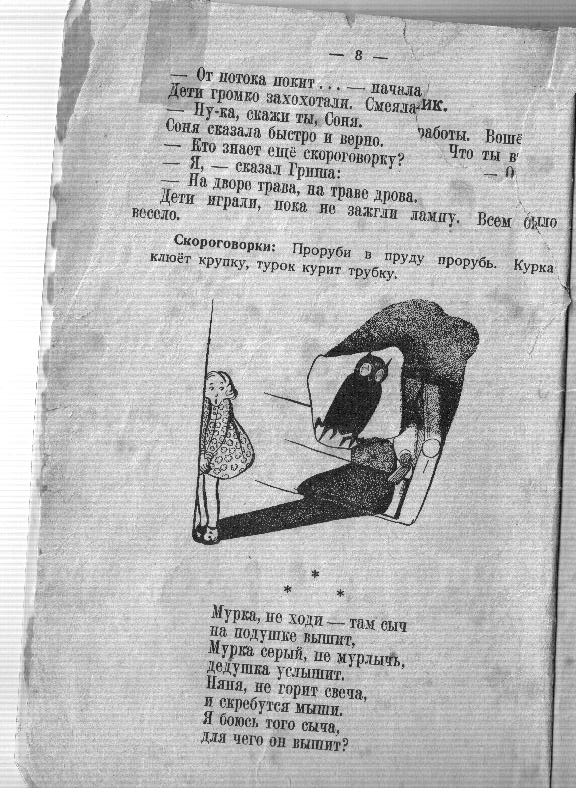
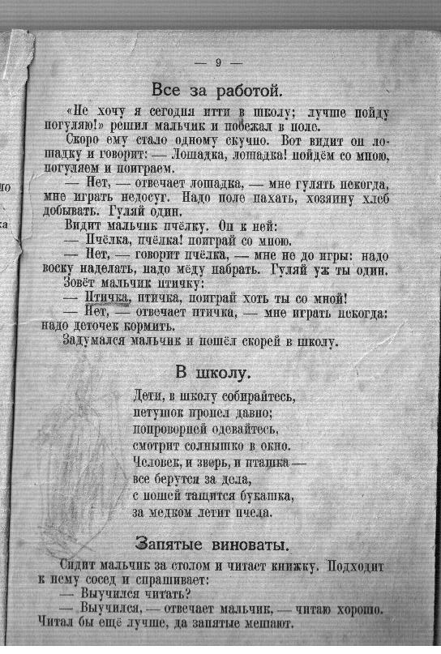

Интересный вопрос - чему и как учили детей во время войны на оккупированых территориях. Учебники того времени не сохранились, а тема любопытная.
Привожу несколько первых листочков учебника по русскому языку и литературе 1943 года, по которому училась и бережно сохранила жительница Пскова Галина Ивановна Голдованская (Столярова).




